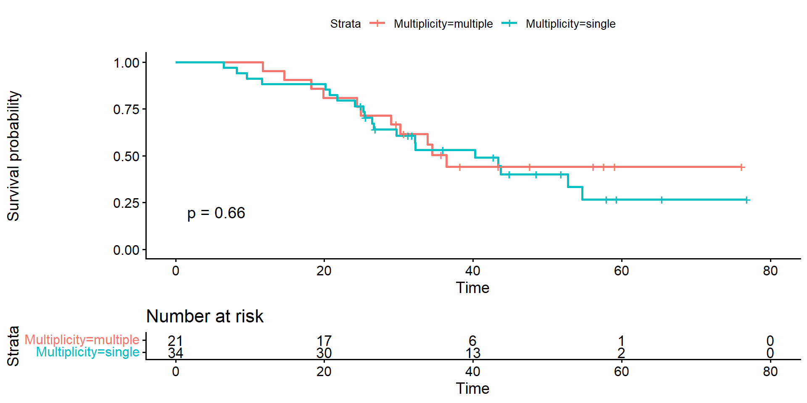
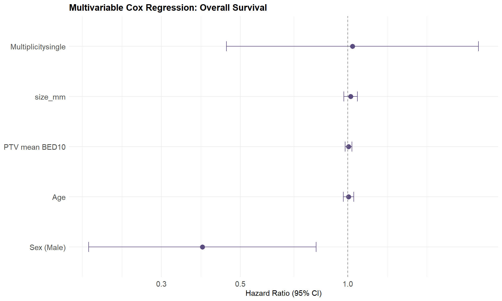

library(tidyverse)
library(readxl)
library(gtsummary)
library(flextable)
# ===== 디렉토리 설정 =====
indir <- "rawdata/"
outdir <- "analysis/"
resdir <- "results/"
# ===== 파라미터 =====
DATA_FILE <- paste0(indir, "clinical_data.xlsx")
GROUP_VAR <- "Death"R script 할용하기
실전 예제
Eunji Ha
2026-06-15
Part3.
R script 실전 예제
Table1 + 전처리 + 분석 Figure
Table 1, 엑셀로 만들면
- median(range) 직접 계산 → 복붙
- n(%) 직접 계산 → 복붙
- p-value 따로 → 복붙
- 변수 하나 바뀌면 → 처음부터
R로 만들면 → 코드 한 번 실행, 끝
파라미터 설정 (예제 데이터 적용)
& 패키지 로드
데이터 구조 먼저
[1] 75 33tibble [75 × 33] (S3: tbl_df/tbl/data.frame)
$ Key_pt : num [1:75] 2 6 6 7 9 9 10 15 17 18 ...
$ Key_lesion : chr [1:75] "liver 2-1" "lung 6-1" "lung 6-2" "liver 7-1" ...
$ IN_sur : num [1:75] 1 1 0 1 1 0 1 1 1 1 ...
$ IN_lesion : num [1:75] 1 1 1 1 1 1 1 1 1 1 ...
$ Sex : chr [1:75] "M" "F" "F" "F" ...
$ Age_Tx : num [1:75] 76 76 76 55 68 68 77 63 77 76 ...
$ OMD_Type : chr [1:75] "Metachronous oligorecurrence" "Repeat oligorecurrence" "Repeat oligorecurrence" "Induced oligorecurrence" ...
$ OMD_class : chr [1:75] "oligometastasis" "oligometastasis" "oligometastasis" "oligometastasis" ...
$ Tx_site : chr [1:75] "liver" "lung" "lung" "liver" ...
$ Primary : chr [1:75] "Colon" "Colon" "Colon" "Rectum" ...
$ Bx_primary : chr [1:75] "adenoca" "adenoca" "adenoca" "adenoca" ...
$ Bx_primary_diff: chr [1:75] "mod" "mod" "mod" "well" ...
$ Multiplicity : chr [1:75] "single" "multiple" "multiple" "single" ...
$ OMD_no : num [1:75] 1 3 3 1 2 2 1 1 1 2 ...
$ size_mm : num [1:75] 15 25 7 42 5 6 27.5 19 16.7 4 ...
$ DD : num [1:75] 1600 1200 1200 1000 1800 1800 1250 1800 1200 1300 ...
$ fr : num [1:75] 3 4 4 5 3 3 4 3 4 4 ...
$ TD : num [1:75] 4800 4800 4800 5000 5400 5400 5000 5400 4800 5200 ...
$ GTV_cc : num [1:75] 5.839 5.8 0.3 25.904 0.097 ...
$ ITV_cc : num [1:75] 8.544 9.7 0.7 25.904 0.221 ...
$ PTV_cc : num [1:75] 18.87 33.9 7.5 53.89 3.93 ...
$ Death : num [1:75] 1 1 1 1 1 1 1 0 1 0 ...
$ OS : num [1:75] 20.7 34.5 34.5 26.6 11.7 ...
$ LF : num [1:75] 1 0 0 0 0 0 0 1 0 0 ...
$ LFFS : num [1:75] 9.23 33.51 33.51 24.51 6.51 ...
$ CTxAfterRT : num [1:75] 0 0 0 0 0 0 0 1 0 0 ...
$ CTxBeforeRT : num [1:75] 0 1 1 1 1 1 0 1 1 1 ...
$ bCTx_Line : num [1:75] 0 3 3 3 2 2 0 2 1 1 ...
$ PTVmean_BED10 : num [1:75] 149 124 127 114 178 ...
$ PTV_D2_BED10 : num [1:75] 162 142 153 116 207 ...
$ PTV_D5_BED10 : num [1:75] 161 141 151 115 203 ...
$ PTV_D95_BED10 : num [1:75] 120.5 103.7 98.1 95.9 148.6 ...
$ PTV_D98_BED10 : num [1:75] 113.5 97 92.2 86.8 143.3 ... [1] "Key_pt" "Key_lesion" "IN_sur" "IN_lesion"
[5] "Sex" "Age_Tx" "OMD_Type" "OMD_class"
[9] "Tx_site" "Primary" "Bx_primary" "Bx_primary_diff"
[13] "Multiplicity" "OMD_no" "size_mm" "DD"
[17] "fr" "TD" "GTV_cc" "ITV_cc"
[21] "PTV_cc" "Death" "OS" "LF"
[25] "LFFS" "CTxAfterRT" "CTxBeforeRT" "bCTx_Line"
[29] "PTVmean_BED10" "PTV_D2_BED10" "PTV_D5_BED10" "PTV_D95_BED10"
[33] "PTV_D98_BED10" 환자-병변 pair: 한 환자가 여러 병변
필요한 column select
Table1에서 보여줄 column 선택하기: select()
가장 간단한 Table 1
- 연속형 → median (IQR) 자동
- 범주형 → n (%) 자동
- 결측치 자동 표시
| Characteristic | N = 551 |
|---|---|
| Sex | |
| F | 20 (36%) |
| M | 35 (64%) |
| Age_Tx | 71 (63, 76) |
| Primary | |
| Colon | 23 (42%) |
| Rectum | 32 (58%) |
| Multiplicity | |
| multiple | 21 (38%) |
| single | 34 (62%) |
| size_mm | 13 (8, 17) |
| TD | |
| 4500 | 1 (1.8%) |
| 4800 | 14 (25%) |
| 5000 | 20 (36%) |
| 5100 | 1 (1.8%) |
| 5200 | 12 (22%) |
| 5400 | 4 (7.3%) |
| 6000 | 3 (5.5%) |
| GTV_cc | 1.5 (0.4, 5.4) |
| PTVmean_BED10 | 136 (125, 146) |
| Death | 31 (56%) |
| 1 n (%); Median (Q1, Q3) | |
그룹 비교 + p-value
| Characteristic | Overall N = 551 |
0 N = 241 |
1 N = 311 |
p-value2 |
|---|---|---|---|---|
| Sex | 0.001 | |||
| F | 20 (36%) | 3 (13%) | 17 (55%) | |
| M | 35 (64%) | 21 (88%) | 14 (45%) | |
| Age_Tx | 71 (63, 76) | 68 (61, 76) | 74 (64, 77) | 0.3 |
| Primary | >0.9 | |||
| Colon | 23 (42%) | 10 (42%) | 13 (42%) | |
| Rectum | 32 (58%) | 14 (58%) | 18 (58%) | |
| Multiplicity | 0.6 | |||
| multiple | 21 (38%) | 10 (42%) | 11 (35%) | |
| single | 34 (62%) | 14 (58%) | 20 (65%) | |
| size_mm | 13 (8, 17) | 10 (7, 14) | 16 (8, 20) | 0.028 |
| TD | 0.067 | |||
| 4500 | 1 (1.8%) | 0 (0%) | 1 (3.2%) | |
| 4800 | 14 (25%) | 4 (17%) | 10 (32%) | |
| 5000 | 20 (36%) | 10 (42%) | 10 (32%) | |
| 5100 | 1 (1.8%) | 0 (0%) | 1 (3.2%) | |
| 5200 | 12 (22%) | 9 (38%) | 3 (9.7%) | |
| 5400 | 4 (7.3%) | 1 (4.2%) | 3 (9.7%) | |
| 6000 | 3 (5.5%) | 0 (0%) | 3 (9.7%) | |
| GTV_cc | 1.5 (0.4, 5.4) | 0.6 (0.3, 1.7) | 3.3 (0.8, 6.7) | 0.006 |
| PTVmean_BED10 | 136 (125, 146) | 139 (129, 144) | 134 (124, 149) | 0.9 |
| 1 n (%); Median (Q1, Q3) | ||||
| 2 Pearson’s Chi-squared test; Wilcoxon rank sum test; Fisher’s exact test; Wilcoxon rank sum exact test | ||||
리뷰어가 BMI→BSA 하면?
엑셀 30분, R 30초
2) 전처리
전체 분석의 80% 😭
스크립트로 만들면 →
데이터 바뀌어도 재실행, 다음 분석은 .rds 로드
dplyr 다섯 동사
| 함수 | 역할 |
|---|---|
filter() |
행 고르기 |
select() |
열 고르기 |
mutate() |
새 변수 |
group_by + summarise |
그룹 요약 |
arrange() |
정렬 |
mutate: 새 변수
# A tibble: 55 × 36
Key_pt Key_lesion IN_sur IN_lesion Sex Age_Tx OMD_Type OMD_class Tx_site
<dbl> <chr> <dbl> <dbl> <chr> <dbl> <chr> <chr> <chr>
1 2 liver 2-1 1 1 M 76 Metachrono… oligomet… liver
2 6 lung 6-1 1 1 F 76 Repeat oli… oligomet… lung
3 7 liver 7-1 1 1 F 55 Induced ol… oligomet… liver
4 9 lung 9-1 1 1 F 68 Induced ol… oligopro… lung
5 10 lung 10-1 1 1 M 77 Metachrono… oligomet… lung
6 15 lung 15-1 1 1 F 63 Repeat oli… oligopro… lung
7 17 lung 17-1 1 1 F 77 Metachrono… oligomet… lung
8 18 lung 18-1 1 1 M 76 Synchronou… oligomet… lung
9 19 lung 19-1 1 1 M 64 Repeat oli… oligopro… lung
10 20 lung 20-1 1 1 M 83 Metachrono… oligomet… lung
# ℹ 45 more rows
# ℹ 27 more variables: Primary <chr>, Bx_primary <chr>, Bx_primary_diff <chr>,
# Multiplicity <chr>, OMD_no <dbl>, size_mm <dbl>, DD <dbl>, fr <dbl>,
# TD <dbl>, GTV_cc <dbl>, ITV_cc <dbl>, PTV_cc <dbl>, Death <dbl>, OS <dbl>,
# LF <dbl>, LFFS <dbl>, CTxAfterRT <dbl>, CTxBeforeRT <dbl>, bCTx_Line <dbl>,
# PTVmean_BED10 <dbl>, PTV_D2_BED10 <dbl>, PTV_D5_BED10 <dbl>,
# PTV_D95_BED10 <dbl>, PTV_D98_BED10 <dbl>, Age_group <chr>, size_cm <dbl>, …저장

파이프라인 흐름
rawdata/clinical_data.xlsx
→ 01_table1.R
→ analysis/1_df_pt.rds
→ results/Table1.docx
→ 02_preprocessing.R (1_df_pt.rds 로드)
→ analysis/2_df_pt_processed.rds
→ 03_km_plot.R → results/KM_plot.png
→ 04_forest_plot.R → results/Forest_plot.png각 스크립트는 앞 단계
.rds를 로드
3) 분석 Figure
그림 작업의 원칙
R은 알맹이, PPT는 마무리
- R = 통계적으로 정확한 곡선·점·에러바
- 꾸미기(폰트·범례·화살표) >>> PPT
파라미터 설정 (예제 데이터 적용)
& 패키지 로드
① Kaplan-Meier

② Forest plot
Cox regression 실행
# Multivariable Cox
cox_model <- coxph(
Surv(OS, Death) ~ Age_Tx + Sex + Multiplicity + size_mm + PTVmean_BED10,
data = df_pt
)
# summary(cox_model)
# 통계 수치를 데이터프레임으로
cox_tidy <- tidy(cox_model, conf.int = TRUE, exponentiate = TRUE)
# 변수 라벨 매핑
cox_tidy <- cox_tidy %>%
mutate(
label = case_when(
term == "Age_Tx" ~ "Age",
term == "SexM" ~ "Sex (Male)",
term == "Multiplicitymultiple" ~ "Multiplicity (Multiple)",
term == "size_cm" ~ "Tumor size (cm)",
term == "PTVmean_BED10" ~ "PTV mean BED10",
TRUE ~ term
)
)
cox_tidy# A tibble: 5 × 8
term estimate std.error statistic p.value conf.low conf.high label
<chr> <dbl> <dbl> <dbl> <dbl> <dbl> <dbl> <chr>
1 Age_Tx 1.01 0.0174 0.316 0.752 0.972 1.04 Age
2 SexM 0.391 0.375 -2.50 0.0123 0.188 0.815 Sex …
3 Multiplicitysin… 1.03 0.416 0.0743 0.941 0.457 2.33 Mult…
4 size_mm 1.02 0.0220 0.871 0.384 0.976 1.06 size…
5 PTVmean_BED10 1.01 0.0112 0.542 0.588 0.984 1.03 PTV …Forest plot 그리기
three components of ggplot2
data: a data frame
aes: x-axis, y-axis, color, fill, group, etc.
geom: the type of plot
Forest plot
# ggplot으로 forest plot
gp <- cox_tidy %>%
ggplot(aes(x = estimate, y = reorder(label, estimate))) +
geom_point(size = 3, color = "#5B4D80") +
geom_errorbarh(
aes(xmin = conf.low, xmax = conf.high),
height = 0.2,
color = "#5B4D80"
) +
geom_vline(xintercept = 1, linetype = "dashed", color = "gray50") +
scale_x_log10() +
labs(
x = "Hazard Ratio (95% CI)",
y = NULL,
title = "Multivariable Cox Regression: Overall Survival"
) +
theme_minimal() +
theme(
plot.title = element_text(size = 13, face = "bold"),
axis.text = element_text(size = 11)
)

정리
✅ KM: survfit() → ggsurvplot()
✅ Forest: coxph() → tidy() → ggplot()
✅ tiff 300dpi → 논문 투고